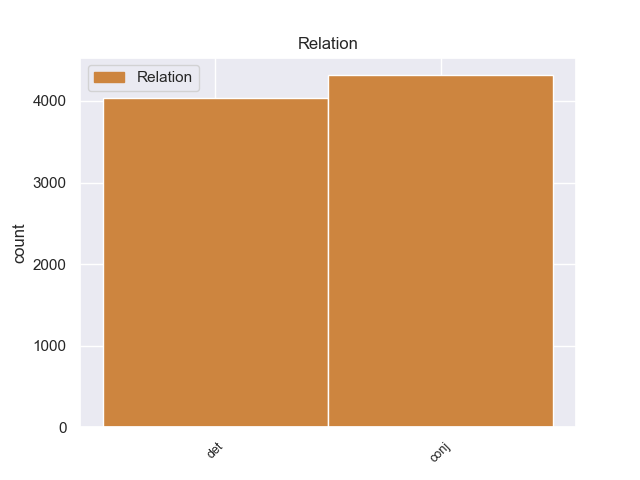
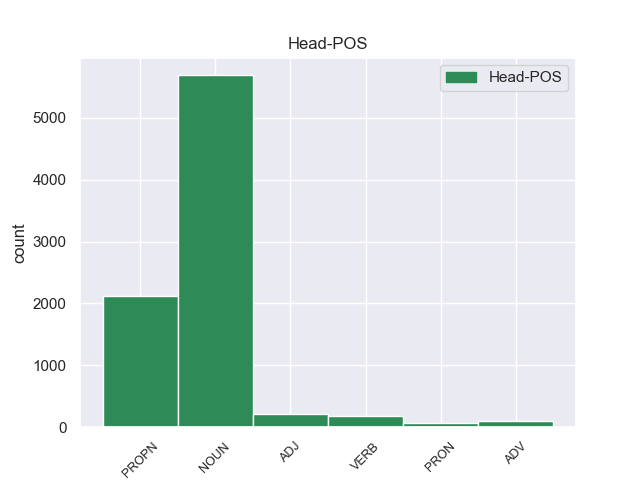
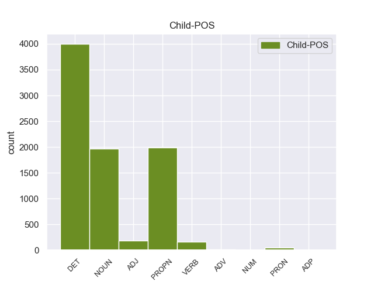

Distribution of features within this leaf



Agreement Rules sorted by frequency.
- When the dependent token is the determiner(det) of the head token, and the head token is NOUN
1 इन यह DET DEM Case=Acc|Number=Plur|Person=3|PronType=Dem 3 det _ ChunkId=NP|ChunkType=child|Translit=ina
2 दोनों _ _ _ _ 0 _ _ _
3 देशों देश NOUN NN Case=Acc|Gender=Masc|Number=Plur|Person=3 0 _ _ _
4 के _ _ _ _ 0 _ _ _
5 बीच _ _ _ _ 0 _ _ _
6 रिश्ते _ _ _ _ 0 _ _ _
7 में _ _ _ _ 0 _ _ _
8 सुधार _ _ _ _ 0 _ _ _
9 से _ _ _ _ 0 _ _ _
10 करोड़ों _ _ _ _ 0 _ _ _
11 लोगों _ _ _ _ 0 _ _ _
12 का _ _ _ _ 0 _ _ _
13 भला _ _ _ _ 0 _ _ _
14 होगा _ _ _ _ 0 _ _ _
15 । _ _ _ _ 0 _ _ _
1 उन्होंने _ _ _ _ 0 _ _ _
2 कहा _ _ _ _ 0 _ _ _
3 कि _ _ _ _ 0 _ _ _
4 भारत भारत PROPN NNP Case=Nom|Gender=Masc|Number=Sing|Person=3 0 _ _ _
5 और _ _ _ _ 0 _ _ _
6 चीन चीन PROPN NNP Case=Nom|Gender=Masc|Number=Sing|Person=3 4 conj _ ChunkId=NP3|ChunkType=head|Tam=0|Translit=cīna|Vib=0
7 सर्वाधिक _ _ _ _ 0 _ _ _
8 आबादी _ _ _ _ 0 _ _ _
9 वाले _ _ _ _ 0 _ _ _
10 देश _ _ _ _ 0 _ _ _
11 हैं _ _ _ _ 0 _ _ _
12 । _ _ _ _ 0 _ _ _
1 अपने _ _ _ _ 0 _ _ _
2 चार _ _ _ _ 0 _ _ _
3 - _ _ _ _ 0 _ _ _
4 दिवसीय _ _ _ _ 0 _ _ _
5 भारत _ _ _ _ 0 _ _ _
6 दौरे _ _ _ _ 0 _ _ _
7 के _ _ _ _ 0 _ _ _
8 दौरान _ _ _ _ 0 _ _ _
9 वे _ _ _ _ 0 _ _ _
10 भारतीय _ _ _ _ 0 _ _ _
11 नेताओं _ _ _ _ 0 _ _ _
12 से _ _ _ _ 0 _ _ _
13 सीमा _ _ _ _ 0 _ _ _
14 विवाद विवाद NOUN NN Case=Acc|Gender=Masc|Number=Sing|Person=3 0 _ _ _
15 और _ _ _ _ 0 _ _ _
16 अन्य _ _ _ _ 0 _ _ _
17 द्विपक्षीय _ _ _ _ 0 _ _ _
18 मसलों मसला NOUN NN Case=Acc|Gender=Masc|Number=Plur|Person=3 14 conj _ ChunkId=NP6|ChunkType=head|Tam=0|Translit=masaloṁ|Vib=0_पर
19 पर _ _ _ _ 0 _ _ _
20 बातचीत _ _ _ _ 0 _ _ _
21 करेंगे _ _ _ _ 0 _ _ _
22 । _ _ _ _ 0 _ _ _
1 दलाई _ _ _ _ 0 _ _ _
2 लामा _ _ _ _ 0 _ _ _
3 ने _ _ _ _ 0 _ _ _
4 कहा _ _ _ _ 0 _ _ _
5 कि _ _ _ _ 0 _ _ _
6 मैं _ _ _ _ 0 _ _ _
7 तिब्बती _ _ _ _ 0 _ _ _
8 समस्या _ _ _ _ 0 _ _ _
9 का _ _ _ _ 0 _ _ _
10 सार्थक सार्थक ADJ JJ Case=Nom 0 _ _ _
11 और _ _ _ _ 0 _ _ _
12 मान्य मान्य ADJ JJ Case=Nom 10 conj _ ChunkId=JJP2|ChunkType=head|Translit=mānya
13 हल _ _ _ _ 0 _ _ _
14 ढूंढ़ने _ _ _ _ 0 _ _ _
15 की _ _ _ _ 0 _ _ _
16 कोशिश _ _ _ _ 0 _ _ _
17 में _ _ _ _ 0 _ _ _
18 हूं _ _ _ _ 0 _ _ _
19 । _ _ _ _ 0 _ _ _
1 ऐसा _ _ _ _ 0 _ _ _
2 होने _ _ _ _ 0 _ _ _
3 की _ _ _ _ 0 _ _ _
4 स्थिति _ _ _ _ 0 _ _ _
5 में _ _ _ _ 0 _ _ _
6 शिक्षकों _ _ _ _ 0 _ _ _
7 के _ _ _ _ 0 _ _ _
8 लिए _ _ _ _ 0 _ _ _
9 पाठ्य _ _ _ _ 0 _ _ _
10 - _ _ _ _ 0 _ _ _
11 पुस्तकों _ _ _ _ 0 _ _ _
12 के _ _ _ _ 0 _ _ _
13 कुछ _ _ _ _ 0 _ _ _
14 अंश _ _ _ _ 0 _ _ _
15 न _ _ _ _ 0 _ _ _
16 पढ़ाने पढ़ा VERB VM Case=Acc|VerbForm=Inf 0 _ _ _
17 और _ _ _ _ 0 _ _ _
18 कुछ _ _ _ _ 0 _ _ _
19 अलग _ _ _ _ 0 _ _ _
20 से _ _ _ _ 0 _ _ _
21 पढ़ाने पढ़ा VERB VM Case=Acc|Number=Plur|VerbForm=Inf 16 conj _ ChunkId=VGNN3|ChunkType=head|Tam=nA|Translit=paṛhāne|Vib=ना_जैसा
22 जैसे _ _ _ _ 0 _ _ _
23 दिशा _ _ _ _ 0 _ _ _
24 - _ _ _ _ 0 _ _ _
25 निर्देश _ _ _ _ 0 _ _ _
26 भी _ _ _ _ 0 _ _ _
27 जारी _ _ _ _ 0 _ _ _
28 किए _ _ _ _ 0 _ _ _
29 जा _ _ _ _ 0 _ _ _
30 सकते _ _ _ _ 0 _ _ _
31 हैं _ _ _ _ 0 _ _ _
32 । _ _ _ _ 0 _ _ _
1 यह यह DET DEM Case=Nom|Number=Sing|Person=3|PronType=Dem 2 det _ ChunkId=NP|ChunkType=child|Translit=yaha
2 सब सब PRON PRP Case=Nom|Number=Plur|Person=3|PronType=Prs 0 _ _ _
3 हमारी _ _ _ _ 0 _ _ _
4 प्रतिबद्धता _ _ _ _ 0 _ _ _
5 , _ _ _ _ 0 _ _ _
6 श्रम _ _ _ _ 0 _ _ _
7 और _ _ _ _ 0 _ _ _
8 प्रयासों _ _ _ _ 0 _ _ _
9 से _ _ _ _ 0 _ _ _
10 संभव _ _ _ _ 0 _ _ _
11 हो _ _ _ _ 0 _ _ _
12 सकेगा _ _ _ _ 0 _ _ _
13 । _ _ _ _ 0 _ _ _
1 पर्यवेक्षकों _ _ _ _ 0 _ _ _
2 का _ _ _ _ 0 _ _ _
3 कहना _ _ _ _ 0 _ _ _
4 है _ _ _ _ 0 _ _ _
5 कि _ _ _ _ 0 _ _ _
6 इस यह DET DEM Case=Acc|Number=Sing|Person=3|PronType=Dem 7 det _ ChunkId=NP2|ChunkType=child|Translit=isa
7 मार्च मार्च PROPN NNP Case=Acc|Gender=Masc|Number=Sing|Person=3 0 _ _ _
8 के _ _ _ _ 0 _ _ _
9 दौरान _ _ _ _ 0 _ _ _
10 कांग्रेसियों _ _ _ _ 0 _ _ _
11 ने _ _ _ _ 0 _ _ _
12 भाजपा _ _ _ _ 0 _ _ _
13 का _ _ _ _ 0 _ _ _
14 जिक्र _ _ _ _ 0 _ _ _
15 करने _ _ _ _ 0 _ _ _
16 से _ _ _ _ 0 _ _ _
17 परहेज _ _ _ _ 0 _ _ _
18 कर _ _ _ _ 0 _ _ _
19 लोगों _ _ _ _ 0 _ _ _
20 में _ _ _ _ 0 _ _ _
21 यह _ _ _ _ 0 _ _ _
22 संदेश _ _ _ _ 0 _ _ _
23 दिया _ _ _ _ 0 _ _ _
24 कि _ _ _ _ 0 _ _ _
25 वह _ _ _ _ 0 _ _ _
26 गांधीवादी _ _ _ _ 0 _ _ _
27 विरासत _ _ _ _ 0 _ _ _
28 को _ _ _ _ 0 _ _ _
29 लेकर _ _ _ _ 0 _ _ _
30 भाजपा _ _ _ _ 0 _ _ _
31 या _ _ _ _ 0 _ _ _
32 किसी _ _ _ _ 0 _ _ _
33 अन्य _ _ _ _ 0 _ _ _
34 पार्टी _ _ _ _ 0 _ _ _
35 से _ _ _ _ 0 _ _ _
36 टकराव _ _ _ _ 0 _ _ _
37 नहीं _ _ _ _ 0 _ _ _
38 चाहती _ _ _ _ 0 _ _ _
39 है _ _ _ _ 0 _ _ _
40 । _ _ _ _ 0 _ _ _
1 वोल्कर _ _ _ _ 0 _ _ _
2 ने _ _ _ _ 0 _ _ _
3 कहा _ _ _ _ 0 _ _ _
4 कि _ _ _ _ 0 _ _ _
5 उन्हें _ _ _ _ 0 _ _ _
6 यह _ _ _ _ 0 _ _ _
7 पता _ _ _ _ 0 _ _ _
8 नहीं _ _ _ _ 0 _ _ _
9 था _ _ _ _ 0 _ _ _
10 कि _ _ _ _ 0 _ _ _
11 १८ _ _ _ _ 0 _ _ _
12 महीने _ _ _ _ 0 _ _ _
13 लंबी _ _ _ _ 0 _ _ _
14 जाँच _ _ _ _ 0 _ _ _
15 से _ _ _ _ 0 _ _ _
16 इस _ _ _ _ 0 _ _ _
17 विश्वस्तरीय _ _ _ _ 0 _ _ _
18 संस्था _ _ _ _ 0 _ _ _
19 का _ _ _ _ 0 _ _ _
20 घोटाला _ _ _ _ 0 _ _ _
21 कहाँ _ _ _ _ 0 _ _ _
22 तक _ _ _ _ 0 _ _ _
23 खुलेगा _ _ _ _ 0 _ _ _
24 और _ _ _ _ 0 _ _ _
25 वह _ _ _ _ 0 _ _ _
26 इसके _ _ _ _ 0 _ _ _
27 नेता _ _ _ _ 0 _ _ _
28 महासचिव _ _ _ _ 0 _ _ _
29 कोफी _ _ _ _ 0 _ _ _
30 अन्नान _ _ _ _ 0 _ _ _
31 की _ _ _ _ 0 _ _ _
32 कुर्सी _ _ _ _ 0 _ _ _
33 हिलाने _ _ _ _ 0 _ _ _
34 के _ _ _ _ 0 _ _ _
35 इतने इतना DET QF Case=Nom|Gender=Masc|Number=Sing 36 det _ ChunkId=NP14|ChunkType=child|Translit=itane
36 नज़दीक नजदीक ADV NST AdpType=Post|Case=Nom|Gender=Masc|Number=Sing|Person=3 0 _ _ _
37 पहुँच _ _ _ _ 0 _ _ _
38 जाएंगे _ _ _ _ 0 _ _ _
39 । _ _ _ _ 0 _ _ _
1 ' _ _ _ _ 0 _ _ _
2 राम _ _ _ _ 0 _ _ _
3 - _ _ _ _ 0 _ _ _
4 रोटी _ _ _ _ 0 _ _ _
5 पदयात्रा _ _ _ _ 0 _ _ _
6 ' _ _ _ _ 0 _ _ _
7 के _ _ _ _ 0 _ _ _
8 बाद _ _ _ _ 0 _ _ _
9 नई _ _ _ _ 0 _ _ _
10 पार्टी _ _ _ _ 0 _ _ _
11 बनाने _ _ _ _ 0 _ _ _
12 की _ _ _ _ 0 _ _ _
13 बात _ _ _ _ 0 _ _ _
14 से _ _ _ _ 0 _ _ _
15 इनकार _ _ _ _ 0 _ _ _
16 करते _ _ _ _ 0 _ _ _
17 हुए _ _ _ _ 0 _ _ _
18 उमा _ _ _ _ 0 _ _ _
19 ने _ _ _ _ 0 _ _ _
20 कहा _ _ _ _ 0 _ _ _
21 कि _ _ _ _ 0 _ _ _
22 यह _ _ _ _ 0 _ _ _
23 गैर _ _ _ _ 0 _ _ _
24 - _ _ _ _ 0 _ _ _
25 राजनीतिक _ _ _ _ 0 _ _ _
26 पदयात्रा _ _ _ _ 0 _ _ _
27 है _ _ _ _ 0 _ _ _
28 , _ _ _ _ 0 _ _ _
29 जिसे _ _ _ _ 0 _ _ _
30 वे वह PRON PRP Case=Nom|Number=Sing|Person=3|Polite=Form|PronType=Prs 0 _ _ _
31 और _ _ _ _ 0 _ _ _
32 पार्टी _ _ _ _ 0 _ _ _
33 महासचिव _ _ _ _ 0 _ _ _
34 अरुण _ _ _ _ 0 _ _ _
35 जेटली जेटली PROPN NNP Case=Nom|Number=Sing|Person=3 30 conj _ ChunkId=NP11|ChunkType=head|Tam=0|Translit=jeṭalī|Vib=0
36 आंध्र _ _ _ _ 0 _ _ _
37 प्रदेश _ _ _ _ 0 _ _ _
38 के _ _ _ _ 0 _ _ _
39 करीमनगर _ _ _ _ 0 _ _ _
40 से _ _ _ _ 0 _ _ _
41 शुरू _ _ _ _ 0 _ _ _
42 करने _ _ _ _ 0 _ _ _
43 वाले _ _ _ _ 0 _ _ _
44 थे _ _ _ _ 0 _ _ _
45 । _ _ _ _ 0 _ _ _
1 श्रीकुमार _ _ _ _ 0 _ _ _
2 के _ _ _ _ 0 _ _ _
3 वकील _ _ _ _ 0 _ _ _
4 का _ _ _ _ 0 _ _ _
5 कहना _ _ _ _ 0 _ _ _
6 है _ _ _ _ 0 _ _ _
7 जब _ _ _ _ 0 _ _ _
8 गुजरात _ _ _ _ 0 _ _ _
9 सरकार _ _ _ _ 0 _ _ _
10 ने _ _ _ _ 0 _ _ _
11 पहले _ _ _ _ 0 _ _ _
12 तीन _ _ _ _ 0 _ _ _
13 बार _ _ _ _ 0 _ _ _
14 पदोन्नत _ _ _ _ 0 _ _ _
15 करते _ _ _ _ 0 _ _ _
16 समय _ _ _ _ 0 _ _ _
17 लंबित _ _ _ _ 0 _ _ _
18 आपराधिक _ _ _ _ 0 _ _ _
19 मामले _ _ _ _ 0 _ _ _
20 पर _ _ _ _ 0 _ _ _
21 विचार _ _ _ _ 0 _ _ _
22 नहीं _ _ _ _ 0 _ _ _
23 किया _ _ _ _ 0 _ _ _
24 , _ _ _ _ 0 _ _ _
25 तो _ _ _ _ 0 _ _ _
26 इस _ _ _ _ 0 _ _ _
27 बार _ _ _ _ 0 _ _ _
28 यह _ _ _ _ 0 _ _ _
29 मामला _ _ _ _ 0 _ _ _
30 इतना इतना DET QF Case=Nom|Gender=Masc|Number=Sing 31 det _ ChunkId=JJP2|ChunkType=child|Translit=itanā
31 महत्वपूर्ण महत्वपूर्ण ADJ JJ Case=Nom 0 _ _ _
32 क्यों _ _ _ _ 0 _ _ _
33 माना _ _ _ _ 0 _ _ _
34 जा _ _ _ _ 0 _ _ _
35 रहा _ _ _ _ 0 _ _ _
36 है _ _ _ _ 0 _ _ _
37 । _ _ _ _ 0 _ _ _
1 सम्मेलन _ _ _ _ 0 _ _ _
2 में _ _ _ _ 0 _ _ _
3 आए _ _ _ _ 0 _ _ _
4 विभिन्न _ _ _ _ 0 _ _ _
5 राज्यों _ _ _ _ 0 _ _ _
6 के _ _ _ _ 0 _ _ _
7 प्रतिनिधियों _ _ _ _ 0 _ _ _
8 ने _ _ _ _ 0 _ _ _
9 कहा _ _ _ _ 0 _ _ _
10 कि _ _ _ _ 0 _ _ _
11 दूर _ _ _ _ 0 _ _ _
12 - _ _ _ _ 0 _ _ _
13 दराज दराज ADV NST AdpType=Post|Case=Acc|Gender=Masc|Number=Sing|Person=3 0 _ _ _
14 या _ _ _ _ 0 _ _ _
15 हाशिए हाशिया NOUN NN Case=Acc|Gender=Masc|Number=Sing|Person=3 13 conj _ ChunkId=NP5|ChunkType=head|Tam=0|Translit=hāśie|Vib=0_का
16 के _ _ _ _ 0 _ _ _
17 गाँवों _ _ _ _ 0 _ _ _
18 में _ _ _ _ 0 _ _ _
19 रहने _ _ _ _ 0 _ _ _
20 वाले _ _ _ _ 0 _ _ _
21 बुजुर्गो _ _ _ _ 0 _ _ _
22 के _ _ _ _ 0 _ _ _
23 लिए _ _ _ _ 0 _ _ _
24 जिला _ _ _ _ 0 _ _ _
25 केंद्र _ _ _ _ 0 _ _ _
26 तक _ _ _ _ 0 _ _ _
27 आना _ _ _ _ 0 _ _ _
28 व्यवहारिक _ _ _ _ 0 _ _ _
29 रूप _ _ _ _ 0 _ _ _
30 से _ _ _ _ 0 _ _ _
31 संभव _ _ _ _ 0 _ _ _
32 नहीं _ _ _ _ 0 _ _ _
33 होगा _ _ _ _ 0 _ _ _
34 । _ _ _ _ 0 _ _ _
Disagree Examples:
1 यह यह DET DEM Case=Nom|Number=Sing|Person=3|PronType=Dem 2 det _ ChunkId=NP|ChunkType=child|Translit=yaha
2 एशिया एशिया PROPN NNP Case=Acc|Gender=Masc|Number=Sing|Person=3 0 _ _ _
3 की _ _ _ _ 0 _ _ _
4 सबसे _ _ _ _ 0 _ _ _
5 बड़ी _ _ _ _ 0 _ _ _
6 मस्जिदों _ _ _ _ 0 _ _ _
7 में _ _ _ _ 0 _ _ _
8 से _ _ _ _ 0 _ _ _
9 एक _ _ _ _ 0 _ _ _
10 है _ _ _ _ 0 _ _ _
11 । _ _ _ _ 0 _ _ _
1 यह _ _ _ _ 0 _ _ _
2 एक _ _ _ _ 0 _ _ _
3 प्रागैतिहासिक _ _ _ _ 0 _ _ _
4 स्थल स्थल NOUN NN Case=Acc|Gender=Masc|Number=Sing|Person=3 0 _ _ _
5 पर _ _ _ _ 0 _ _ _
6 है _ _ _ _ 0 _ _ _
7 और _ _ _ _ 0 _ _ _
8 विश्व _ _ _ _ 0 _ _ _
9 में _ _ _ _ 0 _ _ _
10 अपनी _ _ _ _ 0 _ _ _
11 तरह _ _ _ _ 0 _ _ _
12 का _ _ _ _ 0 _ _ _
13 एक _ _ _ _ 0 _ _ _
14 ही _ _ _ _ 0 _ _ _
15 संग्रहालय संग्रहालय NOUN NN Case=Nom|Gender=Masc|Number=Sing|Person=3 4 conj _ ChunkId=NP6|ChunkType=head|Tam=0|Translit=saṁgrahālaya|Vib=0
16 है _ _ _ _ 0 _ _ _
17 जो _ _ _ _ 0 _ _ _
18 प्रागैतिहासिक _ _ _ _ 0 _ _ _
19 चित्रकला _ _ _ _ 0 _ _ _
20 से _ _ _ _ 0 _ _ _
21 सज्जित _ _ _ _ 0 _ _ _
22 गुफाओं _ _ _ _ 0 _ _ _
23 के _ _ _ _ 0 _ _ _
24 समीप _ _ _ _ 0 _ _ _
25 है _ _ _ _ 0 _ _ _
26 । _ _ _ _ 0 _ _ _
1 यहाँ _ _ _ _ 0 _ _ _
2 आप _ _ _ _ 0 _ _ _
3 चाँदी _ _ _ _ 0 _ _ _
4 के _ _ _ _ 0 _ _ _
5 आभूषण आभूषण NOUN NN Case=Nom|Gender=Masc|Number=Plur|Person=3 0 _ _ _
6 , _ _ _ _ 0 _ _ _
7 बीडवर्क बीडवर्क NOUN NN Case=Acc|Gender=Masc|Number=Sing|Person=3 5 conj _ ChunkId=NP5|ChunkType=head|SpaceAfter=No|Tam=0|Translit=bīḍavarka|Vib=0
8 , _ _ _ _ 0 _ _ _
9 कढ़ाई _ _ _ _ 0 _ _ _
10 का _ _ _ _ 0 _ _ _
11 काम _ _ _ _ 0 _ _ _
12 और _ _ _ _ 0 _ _ _
13 सीक्वन _ _ _ _ 0 _ _ _
14 का _ _ _ _ 0 _ _ _
15 काम _ _ _ _ 0 _ _ _
16 खूबसूरत _ _ _ _ 0 _ _ _
17 अंदाज _ _ _ _ 0 _ _ _
18 में _ _ _ _ 0 _ _ _
19 देख _ _ _ _ 0 _ _ _
20 और _ _ _ _ 0 _ _ _
21 खरीद _ _ _ _ 0 _ _ _
22 सकते _ _ _ _ 0 _ _ _
23 हैं _ _ _ _ 0 _ _ _
24 । _ _ _ _ 0 _ _ _
1 भोपाल भोपाल PROPN NNP Case=Nom|Gender=Masc|Number=Sing|Person=3 0 _ _ _
2 तथा _ _ _ _ 0 _ _ _
3 इंदौर इंदौर PROPN NNP Case=Acc|Gender=Masc|Number=Sing|Person=3 1 conj _ ChunkId=NP2|ChunkType=head|SpaceAfter=No|Tam=0|Translit=iṁdaura|Vib=0
4 , _ _ _ _ 0 _ _ _
5 मांडू _ _ _ _ 0 _ _ _
6 , _ _ _ _ 0 _ _ _
7 उज्जैन _ _ _ _ 0 _ _ _
8 , _ _ _ _ 0 _ _ _
9 खजुराहो _ _ _ _ 0 _ _ _
10 , _ _ _ _ 0 _ _ _
11 पचमढ़ी _ _ _ _ 0 _ _ _
12 , _ _ _ _ 0 _ _ _
13 ग्वालियर _ _ _ _ 0 _ _ _
14 , _ _ _ _ 0 _ _ _
15 साँची _ _ _ _ 0 _ _ _
16 , _ _ _ _ 0 _ _ _
17 जबलपुर _ _ _ _ 0 _ _ _
18 और _ _ _ _ 0 _ _ _
19 शिवपुरी _ _ _ _ 0 _ _ _
20 के _ _ _ _ 0 _ _ _
21 बीच _ _ _ _ 0 _ _ _
22 नियमित _ _ _ _ 0 _ _ _
23 बस _ _ _ _ 0 _ _ _
24 सेवाएँ _ _ _ _ 0 _ _ _
25 हैं _ _ _ _ 0 _ _ _
26 । _ _ _ _ 0 _ _ _
1 भोपाल भोपाल PROPN NNP Case=Nom|Gender=Masc|Number=Sing|Person=3 0 _ _ _
2 तथा _ _ _ _ 0 _ _ _
3 इंदौर _ _ _ _ 0 _ _ _
4 , _ _ _ _ 0 _ _ _
5 मांडू मांडू PROPN NNP Case=Acc|Gender=Masc|Number=Sing|Person=3 1 conj _ ChunkId=NP3|ChunkType=head|SpaceAfter=No|Tam=0|Translit=māṁḍū|Vib=0
6 , _ _ _ _ 0 _ _ _
7 उज्जैन _ _ _ _ 0 _ _ _
8 , _ _ _ _ 0 _ _ _
9 खजुराहो _ _ _ _ 0 _ _ _
10 , _ _ _ _ 0 _ _ _
11 पचमढ़ी _ _ _ _ 0 _ _ _
12 , _ _ _ _ 0 _ _ _
13 ग्वालियर _ _ _ _ 0 _ _ _
14 , _ _ _ _ 0 _ _ _
15 साँची _ _ _ _ 0 _ _ _
16 , _ _ _ _ 0 _ _ _
17 जबलपुर _ _ _ _ 0 _ _ _
18 और _ _ _ _ 0 _ _ _
19 शिवपुरी _ _ _ _ 0 _ _ _
20 के _ _ _ _ 0 _ _ _
21 बीच _ _ _ _ 0 _ _ _
22 नियमित _ _ _ _ 0 _ _ _
23 बस _ _ _ _ 0 _ _ _
24 सेवाएँ _ _ _ _ 0 _ _ _
25 हैं _ _ _ _ 0 _ _ _
26 । _ _ _ _ 0 _ _ _